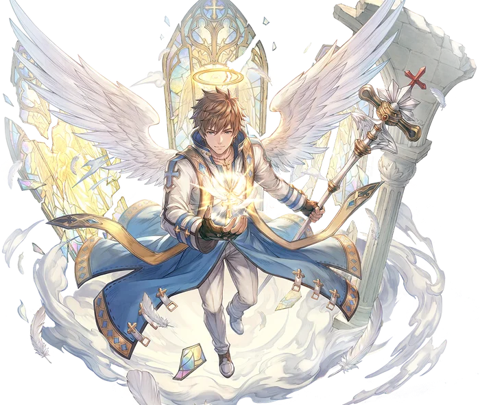

Third tier
Arch Bishop
Arch Bishop is the alternative advancement option for Priests. While the Priest divided its skills between supportive Grace Skills and offensive Authority skills, the Arch Bishop instead divides its skills into three general branches, each of which offering a Grace Skill, an Authority Skill, and an unaligned skill to tie them together.
The first branch of skills are offensive in nature. Oratio puts a holy curse on enemies, causing them to take additional damage whenever struck by Holy damage. Arbitrium deals direct Holy Property Magic damage to a single target and also inflicts the Searing Light status. Finally, Adoramus deals Holy Property Magic Damage in a wide area around the target, with additional effects based on whether the user is in Grace or Authority status.
The second branch of skills are the supportive ones. Grace Heal instantly recovers HP for a targeted ally, both restoring HP and providing a barrier to prevent further damage. Argutus Vita meanwhile is an Authority skill that increases the Atk and Matk of all party members. These are accompanied by Lux Pacifica, consuming the user's Grace or Authority status to grant all allies a protective blessing that heals them whenever they take damage (Grace) or deal damage (Authority).
The final branch brings Physical Skills. With a Grace Skill to increase the user's Atk and Vulnerable Potency, an Authority Skill to deal direct damage, and an unaligned skill to leverage both Grace and Authority Statuses to deal huge burst damage, the Arch Bishop finally has what it needs to draw the Battle Priest out of the wings and into the fight.
Lastly, the Arch Bishop's skill tree is crowned by one last ultimate skill, Manus Dei. This skill calls for divine intervention, bestowing a miracle upon their party to turn the tides of battle at the worst possible moment. This skill requires Base Level 130 to unlock, but otherwise has no requirements and only takes a single skill point, thus turning any suitably leveled Arch Bishop into an incredible asset for any party.

Skill list
Skills
Grouped the way the tree is grouped. Names, types and level caps come from the player wiki, so they match what you see in game.
Offensive Skills3 skills
-
OratioGraceLv 10
Curses enemies to take burst damage whenever struck by Holy attacks.
The user calls down a holy curse on all enemies around them, revealing them and increasing the damage they take from Holy Property attacks. Whenever an enemy under the Oratio Status takes Holy Property damage, they take an additional burst of damage.
-
ArbitriumAuthorityLv 10
Single-target Holy nuke with Magic Pierce and Searing Light.
The user calls a divine light from heaven to scour the targeted enemy from existence, dealing Holy property Magic Damage and inflicting the Searing Light status.
-
AdoramusJudgementLv 10
Wide Holy AoE; consumes Grace or Authority for debuffs.
The user calls on a purging light to cleanse the targeted area of all foes. Deals Holy Property Magic damage to all enemies in an area around the target.
If the user is under the Grace Status, it is consumed to inflict Slow and Blind on all enemies affected.
If the user is under the Authority Status, it is consumed to inflict Vulnerable and Breach on all enemies affected.
Supportive Skills3 skills
-
Grace HealGraceLv 10
Large single-target heal that leaves a protective barrier.
Instantly recovers a large amount of HP for the targeted ally, while also granting them a barrier to protect them from further damage. The barrier's HP is equal to the amount of HP healed by this skill, including any overflow.
-
Argutus VitaAuthorityLv 10
Party-wide Attack and Magic Attack buff.
The user chants an inspiring prayer, bolstering the faith and confidence of their party. Increases the Atk and MAtk of all party members for the duration.
-
Lux PacificaJudgementLv 10
Party blessing that heals on taking or dealing damage.
Unaligned skill. The user bestows a sheltering miracle on their party members. If the user is under the Grace Status, consumes it to apply a buff that heals the targets whenever they would take damage.
If the user is under the Authority status, consumes it to apply a buff that heals the targets whenever they would deal damage.
Whenever this skill grants healing, the original caster loses a small amount of SP. The effect ends early if the caster runs out of SP.
Physical Skills3 skills
-
ExpiatioGraceLv 10
Self buff granting Attack and Vulnerable Potency.
The user calls upon a blessing of war, increasing their Attack and Vulnerable Potency for the duration.
-
PetitioAuthorityLv 10
Physical splash smite that also empowers Smite.
The user delivers a punishing smite to the targeted enemy, inflicting Physical damage to them and all enemies in an area around them. Vulnerable enemies take increased damage. For a short duration after casting this skill, the Smite skill deals increased damage.
-
Gladius SanctumJudgementLv 10
Three-hit physical burst; consumes Grace or Authority for statuses.
Unaligned skill. The user calls down swords of divine light, tearing apart the targeted enemy. Deals Weapon Property Physical Damage to the target three times.
If the user is under the Grace Status, it is consumed, and this skill inflicts the Stun Status.
If the user is under the Authority Status, it is consumed, and this skill inflicts the Bleeding Status.
Ultimate Skill
-
Manus DeiMiracle
Miracle: mass resurrection, full recovery, and party blessings.
The user makes a desperate plea for divine intervention, and is granted a miracle to turn the tides of battle. Any dead party members in the area are immediately resurrected, then all party members are healed to full HP and SP and gain the Aspersio and Assumptio statuses for an extended duration.
If the user is under the Grace Status, the user takes half damage from all attacks while this skill is casting.
If the user is under the Authority Status, all enemies in the area of effect are Slowed and Blinded.
A player may only be affected by this skill once every five minutes, even from a different caster.
From the players
See it played
No videos for this class yet. Record your gameplay and post it in the Discord.
Come find out what changed
Make an account now, grab the client, and be there when the servers go up.